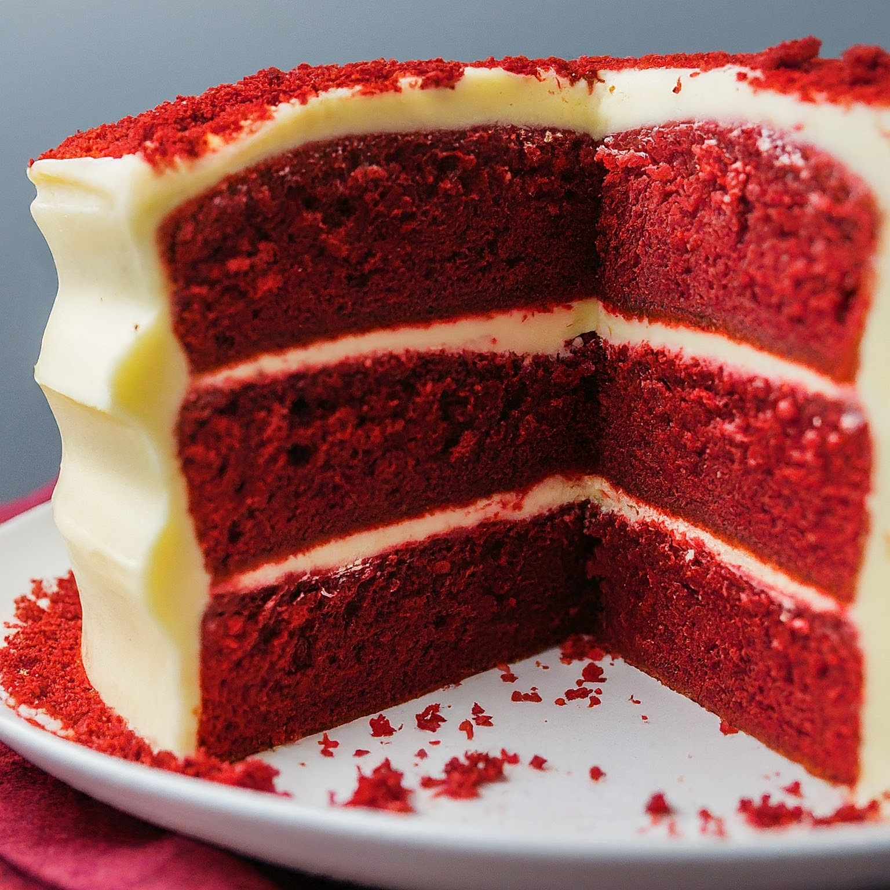

Red Velvet Cake Recipe
Ingredients
- 2&1/2 cups all-purpose flour
- 1 1/2 cups sugar
- 1 tsp baking soda
- 1 tsp salt
- 1 tsp cocoa powder
- 1 1/2 cups vegetable oil
- 1 cup buttermilk, room temperature
- 2 large eggs, room temperature
- 2 tbsp red food coloring
- 1 tsp white distilled vinegar
- 1 tsp vanilla extract
Instructions
- Preheat oven to 350°F (175°C).
- Grease and flour two 9-inch round cake pans.
- In a medium mixing bowl, sift together the flour, sugar, baking soda, salt, and cocoa powder. They will be identified as your dried ingridents
- In a large bowl, whisk together the oil, buttermilk, eggs, food coloring, vinegar, and vanilla.
- Gradually add the dry ingredients to the wet ingredients, mixing until smooth.
- Divide the batter evenly between the prepared pans.
- Bake in the preheated oven for 30-35 minutes, or until a toothpick inserted into the center comes out clean.
- Remove the cakes from the oven and let them cool in the pans for about 10 minutes, then turn them out onto a wire rack to cool completely.
- Frost with your favorite cream cheese frosting and enjoy!
